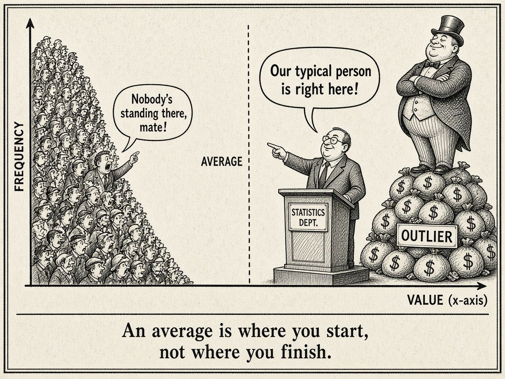

The Average Hides the Story
There's something comforting about a single number. Someone asks how things are going, you give them the average, and everyone nods. It feels finished. But the longer I work with data, the more I treat an average as a question rather than an answer.
The mean can sit where nobody lives
The first habit is the simplest: before quoting an average, look at the distribution. A histogram takes seconds and tells you whether the average describes a typical case, or sits awkwardly between two very different groups. If half your customers spend a little and half spend a lot, the "average customer" might not exist at all. Medians, percentiles and a quick look at the tails often tell a more honest story than the mean on its own.

Split it before you trust it
The second habit is slicing. Break the number down by segment, by time period, by region, by whatever dimension actually drives behaviour. This is where the surprises live. Statisticians have a name for the most dramatic version, Simpson's paradox, where a trend shows up in every subgroup and then reverses once you combine them, because the groups are different sizes. You don't need to remember the name. You just need the reflex to ask, "Does this still hold when I split it?"
The slice that matters gets averaged out
The third habit is the one I think about most: who's being hidden? Averages are dominated by the biggest groups. A small segment can be doing something really important, good or bad, and barely move the overall number. It's often exactly the slice you most need to see.
A basketball example
In my NBA side project I see this all the time. A team's season-long net rating is one number, but underneath it are dozens of five-man lineups. Some are clearly winning their minutes and some are clearly losing theirs, and the overall figure blends them into something that describes none of them. The interesting analysis only starts when you break it apart, and small samples are a trap of their own at that point. (I dig into this kind of thing on my channel, NoFlightZone.)
Same problem, new tools: LLM evals
This carries straight over into AI engineering. When you evaluate an LLM prompt or model, it's tempting to report one overall score. But if your eval set has categories, such as different question types, input formats or edge cases, the overall score can look healthy while one category is failing badly. Reporting results by slice, and watching the weakest slice instead of only the overall number, catches regressions the headline figure would hide.
The accountant in me agrees
None of this is new to anyone with a finance background. A budget can balance perfectly in total while individual lines are well over or under, and the offsets cancel out. That's why variance analysis goes line by line. Totals reassure; the detail informs.
The takeaway
When someone hands you an average, ask three things: what does the spread look like, what happens when I split it, and who's being averaged out? An average is where you start, not where you finish.